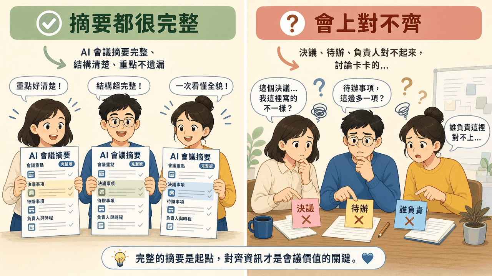
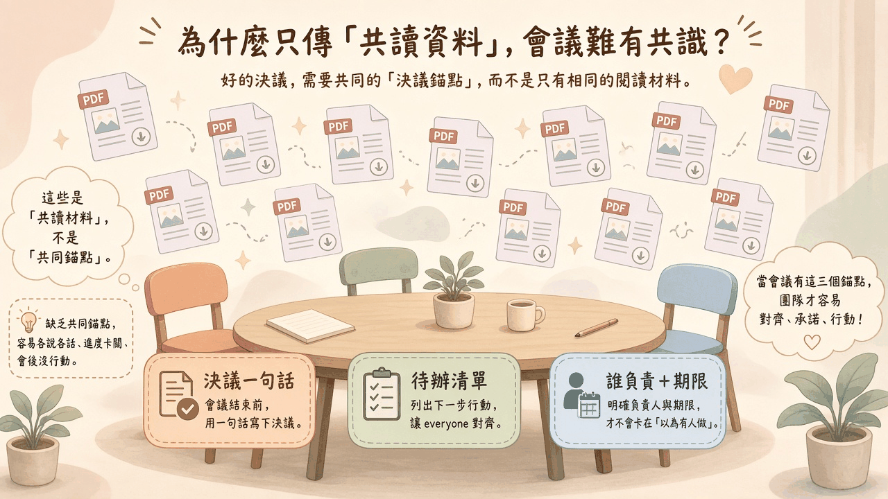
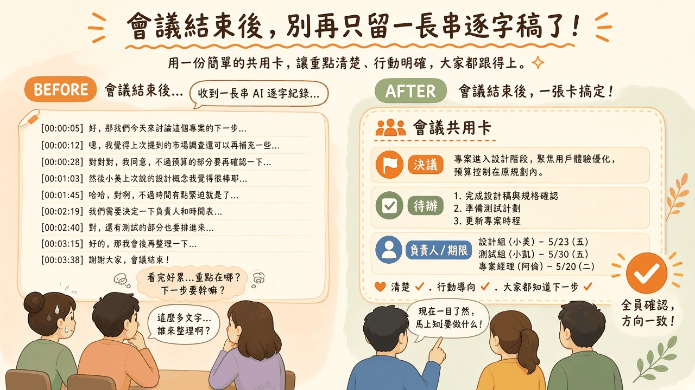

人人都有一份完整摘要。重點清楚、結構整齊，看完會覺得這場會已經被好好記住。真正坐下來對「決議是哪一句、待辦有哪些、誰負責到什麼時候」，三個人卻翻出三個版本。摘要把話收齊了。對齊還沒開始。
閱讀說明：本文為編輯依常見會議與摘要實務整理的科普短文，非整理自單一節目或供應商白皮書；文中不引用未查核的市場數字或產品保證。場景為示意。
會議前，模型把錄音或逐字稿收成摘要。欄位看起來很齊：會議重點、決議事項、待辦事項、負責人與時程。三個人各拿一份，都覺得這份寫得清楚，結構完整，一次就能看到全貌。
進了會議室，第一個問題就岔開。這場會在談一個產品要不要進入設計階段。甲指著自己摘要裡的決議：「進入設計，範圍維持原訂。」乙翻開自己的那份：「我這裡寫的是先補一輪使用者訪談。」兩句都在逐字稿裡出現過。兩份摘要都沒有把它們漏掉。它們只是被收在不同段落，被不同的人當成「這次的結論」。
待辦也對不上。甲的清單有三項，是會上有人明確答應要做的事。乙的清單有七項，因為模型把「也可以考慮」的猜想一起列進去了。負責人更卡。摘要寫「設計組會跟進」，會上沒有人知道跟進的是誰，也沒有人說得出跟到哪一天。
完整摘要做的是把說過的話收齊。對齊要的是同一句話被大家指著。收齊可以各做各的。指著，必須是同一張卡。人人都有一份完整摘要，會上仍可能對決議、待辦、誰負責各說各話。完整，沒有自動變成對齊。
三個人各抱一本很厚的旅遊手冊，景點、餐廳、交通都寫到了。走到路口，一個人要左轉去博物館，一個人堅持先吃午餐，一個人以為今天自由活動。手冊沒有漏頁。漏的是出發前一起用筆圈起來的那一行：今天只去這一站，幾點集合，誰拿票。

插圖：白話科技編輯繪製／AI 輔助，非新聞照片
摘要變長，通常是把更多句子收回來：誰先發言、哪段有爭議、哪些做法被提過。這些對事後回看有用。會上對不齊的時候，缺的是那三行還沒被一起指過。多收一段原文，三行仍可能是空的。
對不齊發生在三個位置。決議沒有收成大家能一起複述的一句話。待辦沒有收成同一份清單，討論中的想法和已經答應要做的事混在一起。負責人沒有寫到人，期限沒有寫到日子，於是「有人會處理」變成會後各自的猜測。
把摘要再加兩頁，這三個位置仍可能是空的。模型很會把討論寫得像已經有結論。條理讓人放心。放心的人進了會議室，才發現隔壁那份同樣有條理的摘要，把另一句當成了結論。讀的人各取所需，各自覺得自己讀到的那版就是共識。
所以下一步是把那三行單獨抽出來，寫到大家同時看得到的地方。摘要可以繼續當閱讀材料。對齊看的是那三行有沒有被一起確認。
共享決策錨點是會議裡大家一起指著的那幾行。它要寫在同一張共用卡上，短到能被一起讀、一起改、一起複述。
決議一句話。散會前用一句話寫下這次決定了什麼。一句話容不下兩個方向。若還有分歧，這一行就寫「尚未決議」，並列出還在爭的點。兩段都很完整的摘要，代替不了這一句。
待辦清單。只列下一步要做的事。討論過、但沒有人答應要做的，另列成「提到、尚未承諾」。清單的用處，是讓每一個人對得上同一組下一步。
誰負責＋期限。每一項待辦寫一個具名的人，和一個看得到的日期。小組名稱、部門名稱，不能代替人名。「盡快」會在會後被理解成不同的天。寫不出人名或日期，這一項就先留在尚未承諾。
會前傳出去的投影片、報告、模型整理的長摘要，是共讀材料。大家收到同一批檔案，只代表有機會讀到相同的句子。讀到，和指著同一句說「就是這句」，是兩件事。共同錨點是會上被確認過的那三行。缺了它們，桌上可以堆滿相同的閱讀材料，會議仍難有同一句共識。
菜單可以印得很完整，每一道都有說明。點餐時仍要有人把「這桌今天吃什麼、誰去結帳、幾點要離開」寫在同一張單上。菜單是共讀材料。那張單才是大家離席時指著的錨點。

插圖：白話科技編輯繪製／AI 輔助，非新聞照片
會前仍可以把摘要發出去，讓大家帶著完整稿進門。同時在共用位置放一張幾乎空白的卡，只印三個標題：決議一句話、待辦清單、誰負責＋期限。空白是故意的。它提醒這三行還沒被這場會議確認。
摘要裡已經出現的句子，可以先貼到卡上當草稿，並標成「尚未確認」。草稿幫助開會時少重講一遍。標成尚未確認，是為了避免有人把模型寫的那句，當成已經通過的決議。自己那份很完整的摘要可以留著。進門之後，大家改的是同一張卡。
會上有人說「我的摘要不是這樣寫」，就是錨點該出場的時候。請他把自己摘要裡的那句，和共用卡上的那句，放在一起看。兩句若指向不同行動，就在卡上改到只留一句，或明確寫成尚未決議。改完之後，這次的結論以卡上那一句為準。私人摘要裡互相矛盾的句子，留在各自的閱讀材料裡。
待辦也在會上收。多出來的項目，問一句：這是下一步，還是討論中提到的想法？下一步留在清單。想法移到「提到、尚未承諾」。負責人當場填人名和日期。填不出人名，這項就還不是待辦。
一份共用卡勝過三份完整摘要，是因為會上只能有一個被一起指著的版本。三份摘要可以各自把重點寫齊，它們記錄的是各自讀到的句子。卡上記錄的是這次一起確認過的行動。散會前把三行念出來。在場的人聽到不對，就在這一刻改，改完才離開。
散會後，模型可以再出一版長摘要，也可以保留逐字稿。那是回看用的材料。寄給沒有出席的人時，第一眼該看到的是那張已經確認的共用卡：決議一句話、待辦清單、誰負責＋期限。
長摘要放在卡的後面，或放在連結裡。順序反過來，沒有出席的人又會從長文裡各抽一句，回到會上對不齊的起點。逐字稿可以忠實到每一聲回應。忠實把過程留住。沒有出席的人從第三分鐘讀到第四十分鐘，仍可能各自抽出一句，當成這次的決議。
卡上若有空白，就保持空白，並寫明尚未確認。逐字稿再完整，也只是把空白蓋住。下一場會從空白的那一行接著問，問到有一句話、一份清單、一組人名和日期為止。
會後有人把整段逐字稿寄進群組，像把三小時的行車錄音傳給沒有同行的人。沒有同行的人要的是一張小卡：明天改走哪條路、誰去訂房、幾點前回覆。錄音可以留著查。小卡要先讓人一眼看完。

插圖：白話科技編輯繪製／AI 輔助，非新聞照片
以下是編輯根據本文延伸的實務建議，不是講者原話，也不是已驗證的研究結論。
摘要的輸出結構要強制三個欄位：決議一句話、待辦清單、負責人與期限。這組欄位就是輸出結構（schema）裡不能省略的部分。欄位可以是空的，空的時候必須寫成「尚未決議」或「尚未指定」。會議重點的長段落再完整，也不能把空欄看起來補滿。三個人會從長段落裡各抽一句；強制欄位讓缺的錨點露出來。
確認後的錨點寫入大家同時打得開的同一處。同一份共用文件、同一個頁面，或團隊已經在用的那個固定欄位都可以。個人摘要、逐字稿、模型的長稿另存，標題標明它們是閱讀材料。對齊以共用處那一張卡為準，會上改的也是這一張。
加上一項對齊檢查，再把摘要標成可以外寄。檢查三件事：決議是不是只有一句，或明確標成尚未決議；待辦有沒有和「提到、尚未承諾」分開；每一項待辦是不是都有一個具名的人與一個日期。檢查不通過，共用卡維持未確認。模型很會把討論寫成已經有結論，檢查是為了讓未確認留在未確認。
選一次會產生摘要的會議。在輸出結構加上決議一句話、待辦清單、負責人與期限，並把結果寫進團隊已有的一個共用頁面，先標成尚未確認。驗收方式：請一位沒有改過這份輸出的同事，只打開共用頁，讀出決議一句話、列出待辦、指出每一項的負責人與期限。三項都指得出來，這週的檢查才算通過。任一項指不出來，就把該欄維持尚未確認。這是初步試驗，用來檢查這條輸出能不能被另一個人指認。
以下是編輯根據本文延伸的實務建議，不是講者原話，也不是已驗證的研究結論。
散會前問三句，而且寫在同一張大家看得到的卡上。決議是哪一句。待辦有哪些。誰負責到什麼時候。三句有一句答不出來，那一項就標成尚未確認，這場會先不要當成已經對齊。對齊發生在一起回答的時候。
指定一個人在會中確認錨點。這個人把會上改過的句子寫回共用卡，散會前念出三行，讓在場的人修正或點頭。沒有這個人，卡上的字就還是草稿。摘要可以自動產生。確認需要一個會把大家的修正收進同一張卡的人。這個人可以是你，也可以是這次討論裡被指定收尾的同事。
收到「都有摘要了」，仍回到那三句。材料到了，只代表大家有機會讀到相同的段落。對齊要看共用卡上的三行是否已被確認。用「都有摘要了」收場，會把各讀一份完整稿，留在各說各話的狀態。
選一場由你主持、人不多的會。散會前留出時間，把三句的答案寫在大家看得到的同一張卡上，請在場的人當場修正。驗收方式：會後把這張卡傳給一位沒有出席的同事，請他用自己的話回覆決議、一項待辦，以及負責人與期限。回覆和卡上一致，這次對齊才算留下紀錄。不一致，就在下一場會把那一項標成尚未確認，並請確認錨點的人重念一次。這個試驗只檢查你帶的這一場會。
決議一句話、待辦清單、誰負責＋期限。三行被一起確認過，這場會才算對齊。
本文為編輯根據常見會議與摘要實務整理的科普短文，非整理自單一節目或供應商白皮書，也不冒充研究結論。文中不引用未查核的市場數字或產品保證。文末兩則 Takeaway 是編輯依本文延伸的實務建議。延伸閱讀連回本站姊妹篇，供對照可交接的產物、流程裡的判斷，以及怎樣核對一次判斷。